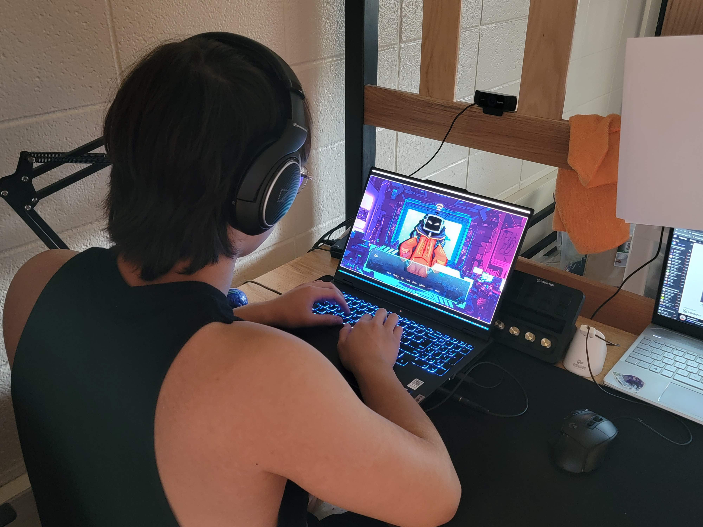
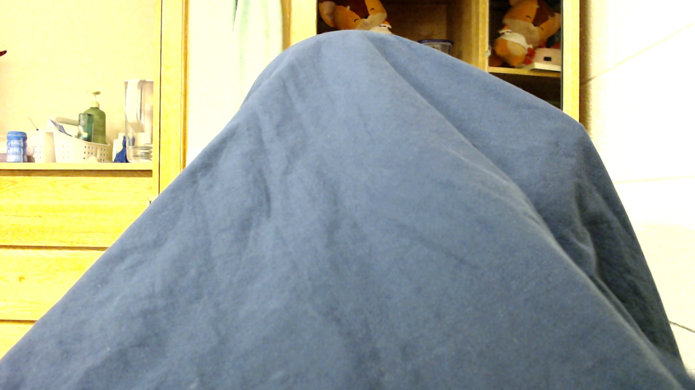

Everdusk Sector
TL;DR
Over the summer of 2024, I had a burst of creativity and decided to create a visual novel, but life got in the way and the project was shelved. In the fall, I found a new opportunity through a week-long game jam, where I assembled a team and committed to making the game. We faced numerous challenges, including time zone differences and my own midterms, but I worked through the night coding and pulling everything together, eventually submitting just 15 minutes before the deadline. Despite feeling the game wasn't fully finished, I added some final touches, including voice-acting one of the characters. After playing the game for the first time post-development, I caught a few bugs and made improvements. In the end, our team pulled two all-nighters, made 104 Git commits, and finished in the top quartile out of 1,500 entries—a solid achievement for our first game jam.
Summer, 2024:
Over the summer of 2024 I had this burst of creativity where I wanted to create a game. Specifically, I wanted to use the medium of the visual novel to tell a really great story. I've always wanted to create things. To tell a story. But life got in the way, and the project was shelved. Still, the urge to create lingered.
Fast forward to the fall semester. I was taking a creative writing class focused on fiction, and I found a new opportunity to tell a great story: a game jam. For those unfamiliar, game jams are intense competitions where developers come together to make a game within a limited time frame—this one was just a week long. Inspired and determined, I set out to find a team.
I joined a Discord server dedicated to the game jam and quickly assembled a group: an artist, a musician, a pixel artist, and a writer. None of us could devote 10 hours a day to the project, but we all shared the same goal: to create something high-quality in the short time we had.
September, 2024:
This time, I was committed to seeing it through. I was going to make a game from start to finish in just a week. But several logistical hurdles stood in the way—first, I had a midterm and several assignments due that same week. On top of that, my teammates and I were scattered across different time zones. They were six hours ahead, so with everyone juggling their own work, classes, and responsibilities, we couldn't even find a good time for calls. Instead, we had to rely on messages, sending updates back and forth.
Process
When the final stretch arrived, I sat down at my computer around 10 PM, expecting to work until midnight—maybe 1 or 2 AM if I hit any snags. I had it all planned out: hit submit, collapse into bed, and finally wrap up a grueling week with my Minecraft fox plush. I started coding, editing the manuscript, and pulling all the pieces together—the story, the artwork, and the music. Hours slipped by in a blur of Visual Studio Code and Google Docs, and when I next checked the clock, it was 3 AM. I wasn't even close to being done. And the due date was in 3 hours—at 6 AM.
The rest of the night passed in a blur, and to this day I'm still not sure how I actually did it all. I worked for over 12 hours straight, only taking breaks to eat (mostly bananas) and use the bathroom. Visual Studio Code and Google Docs sat open as I typed away, taking the story that the writer submitted and the beautiful art and fantastic music and crafting it into a polished game.
The rest of the night is a haze. I somehow powered through over 12 hours of straight work, only stopping to grab a banana or run to the bathroom. I kept coding, writing, and making final tweaks. When I finally hit submit, there were 15 minutes left before the deadline. Relief washed over me, but the thought that the game wasn't truly done still gnawed at me. Regardless, I needed a break. Stepping into the sunlight after having locked myself in my dorm for 12 hours straight was among the most euphoric experiences of my life.
How did you work until the morning if the due date was at 6 AM?
I could make changes to the game after the due date, but 6 AM was when other people could start voting on it.
Yet, I couldn't shake the feeling that there were more things to polish. I had this ambitious idea to voice-act one of the characters—a two-tailed fox—so I threw together a makeshift voice-acting setup. I must've looked stupid, but I didn't care. I spent the rest of the day wrapping up stylistic touches, recording my lines, and finally called it quits by evening. Time for a much-needed rest.
After a long sleep, I sat down to play my own game for the first time. Amazingly, I'd never gone through it from start to finish during development, so I wanted to estimate the total playtime and catch any remaining bugs. It took just over an hour to get through the dialogue, and I'm glad I played it—catching a few minor issues and making clarity adjustments along the way.


In the end, our team pulled two all-nighters, I made 104 Git commits, and wrote around 5,147 lines of code, most of which was dialogue. Despite the exhaustion and the chaos, we did it. We made a game. And considering the challenges we faced, it didn't do too badly! Out of 1,500 projects, ours landed in the top quartile. Not bad for a first game jam, especially one where I had so many other responsibilities.■